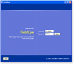
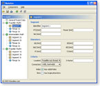
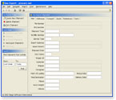

The JGoodies Forms framework helps you lay out and implement elegant Swing panels quickly and consistently. It makes simple things easy and the hard stuff possible, the good design easy and the bad difficult.
Main Benefits
|  |  |  |
You can download the latest release, which includes the binary library JAR, library sources, documentation, a tutorial, a whitepaper, and the JGoodies Forms Demo.
The file README.html in the distribution root directory refers to the release notes, an FAQ, a user's guide, and the API docs. The distribution also includes tutorial sources that help you get started. I recommend read the Quick Start in the HTML documentation, to launch the JGoodies Forms Demo while browsing the tutorial sources. The accompanying whitepaper describes layout problems, goals, and concepts implemented by the JGoodies Forms. You may also study the presentation "Layout and Panel Building" at the JGoodies articles page.
Please check the FAQ and do not send personal mail!
You may subscribe to the users mailing list and browse or search the list's archive. And you can direct new questions to users@forms.dev.java.net. Please register with this list before you post; otherwise I need to manually accept your messages. Also, you can use the issue tracker to find issues regarding the Forms. As a project observer you can log defects, request features and suggest enhancements.
The FormLayout has been designed to be powerful, flexible, precise and easy to learn and understand. It can significantly reduce the time to describe a form and to fill it with components. The layout manager introduces a unique layout feature: it honors the screen resolution and dialog font size to retain the layout proportions in different environments.
Also, we have seperated the layout task from the panel construction. Therefore we provide a set of non-visual builders that assist you in defining common panel layouts and in filling a form with components. The JGoodies Forms ships with general purpose builders and builders for specialized layout tasks. For example, the DefaultFormBuilder helps you build forms with one, two, three, or four columns. The ButtonBarBuilder specializes in building button bars.
On top of these non-visual builders the JGoodies Forms provides factories that create the most frequently used layouts, panels, bars and stacks. We recommend to use the factory methods whenever possible; future releases may map a logical panel creation to a concrete creation method that honors the platform and look&feel, for example the Mac vs. Windows button bar layout, where Mac has the default button in the right hand side and Windows in the left.
The Forms framework ensures the visual quality and consistency of the JGoodies freeware tools and demos - see yourself.
The finished library you can now download for free has been financed by Johannes Riege,and customers of the JGoodies Swing Suite. It is only with their money that I can provide, maintain, and improve this library at no charge.
The form-oriented building has been inspired by the grid layout system as described by Kevin Mullet and Darrel Sano in their book Designing Visual Interfaces. The FormLayout's API has roots in the APIs of TableLayout by Daniel Barbalace, HIGLayout by Daniel Michalik and GridBagLayout by Doug Stein. The concept of dialog units stems from Microsoft user interface implementations.
If you save time and money using the JGoodies Forms, please help me finance my Java desktop activities by licensing the commercial JGoodies Swing Suite.
{kind=link}
{kind=link}
{kind=link}